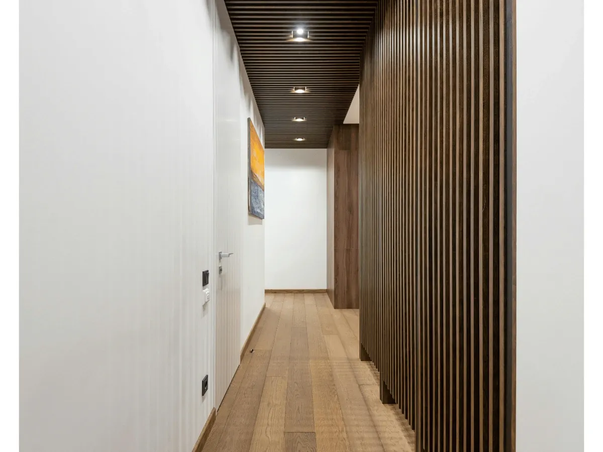
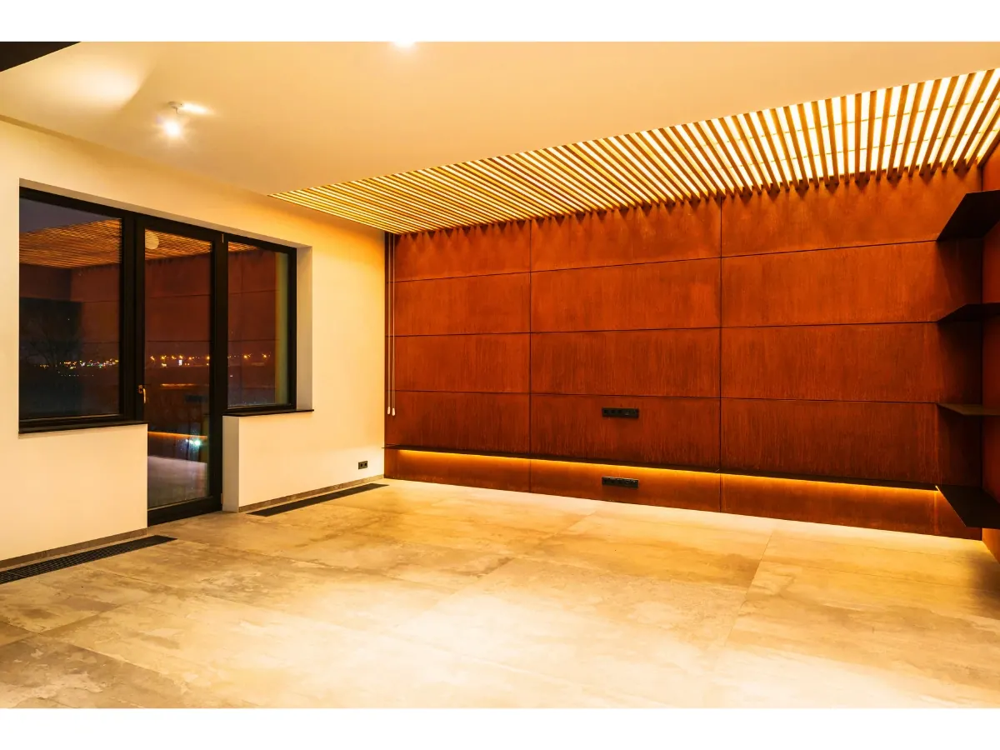
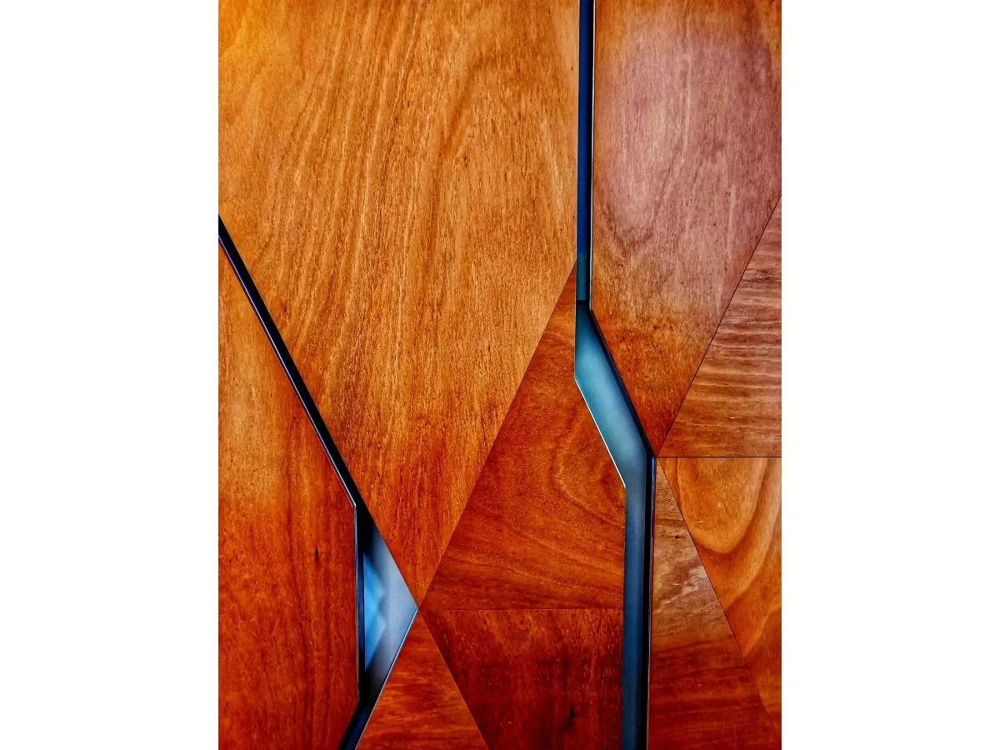
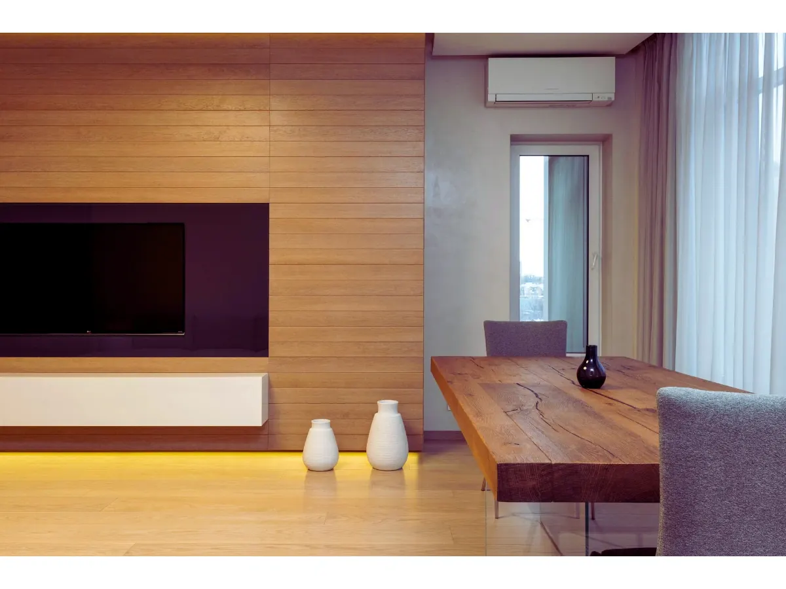
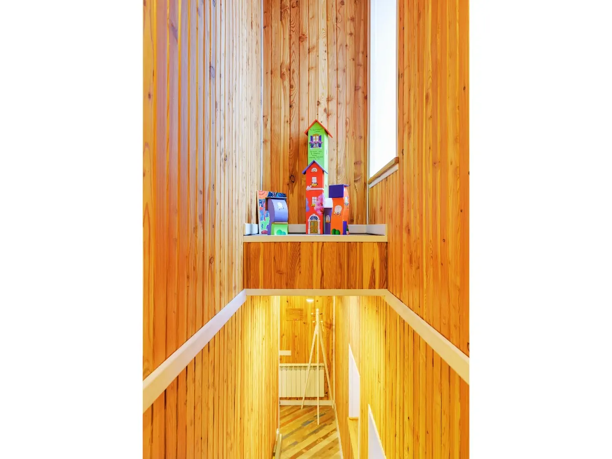
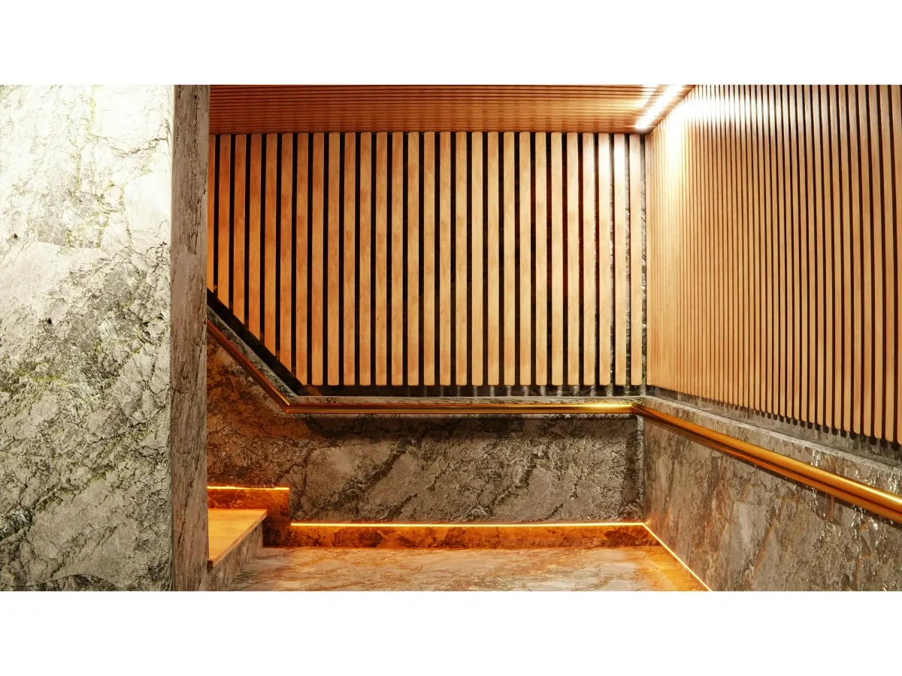

واجهات ومداخل دافئة
توزيع بديل الخشب بطريقة تبرز الواجهة والمدخل وتمنح المكان طابعًا أكثر ترحيبًا.
يمنح بديل خشب بالرياض الواجهات والجلسات والمداخل طابعًا دافئًا قريبًا من الخشب الطبيعي، مع مرونة أكبر في التشكيل والتنسيق الخارجي. في مؤسسة إبداع الظل نتعامل مع بديل الخشب بوصفه عنصرًا تصميميًا متكاملًا، وليس مجرد إضافة سطحية؛ فهو يساعد على تهذيب شكل الواجهة، إبراز المدخل، تنظيم الجدران الديكورية، وإضافة لمسة راقية للجلسات الخارجية والأسوار.
تختلف احتياجات العملاء من موقع لآخر؛ فبعضهم يريد واجهة أكثر دفئًا وانسجامًا مع لون المنزل، وآخرون يبحثون عن خلفية أنيقة لجلسة خارجية أو معالجة جدار مكشوف أو سور يحتاج إلى مظهر أكثر ترتيبًا. لذلك نبدأ بدراسة المساحة والصور أو المعاينة، ثم نقترح توزيع الشرائح واتجاهها ولونها وطريقة تثبيتها بما يتناسب مع الواجهة وطبيعة الاستخدام اليومي.
يمكن استخدام بديل الخشب في واجهات الفلل، مداخل المنازل، جلسات الحدائق والأسطح، الجدران الديكورية، الأسوار، وبعض تفاصيل المظلات عندما يكون المطلوب إضافة مظهر خشبي دافئ دون تحويل الصفحة إلى خدمة مظلات فقط. ويُراعى في التنفيذ مقاومة العوامل الخارجية مثل الشمس والغبار وتفاوت درجات الحرارة، مع الاهتمام بنظافة الفواصل واستقامة الشرائح وتناسق اللون مع بقية عناصر المكان.
هذه الصفحة مخصصة لمن يبحث عن بديل خشب بالرياض كحل للواجهات والجلسات والمداخل والديكور الخارجي. أما من يبحث عن التظليل العام للسيارات والمداخل فله صفحة مستقلة عن المظلات المودرن، ومن يرغب بتصاميم زخرفية مقصوصة بالليزر فله صفحة متخصصة في مظلات قص الليزر، حتى تبقى هذه الصفحة مركزة على بديل الخشب واستخداماته المتعددة.
نقترح اللون والتوزيع واتجاه الشرائح حسب الصور أو المعاينة، ثم نحدد طريقة التثبيت بما يناسب الواجهة أو المدخل أو الجلسة الخارجية أو السور، مع الحفاظ على جودة التشطيب ومقاومة العوامل الخارجية.
نماذج توضح استخدامات بديل الخشب في الواجهات والمداخل والجلسات الخارجية والجدران الديكورية. اضغط على أي صورة للتكبير.






ننفذ بديل خشب في الرياض للواجهات، المداخل، الجلسات الخارجية، الجدران الديكورية والأسوار، مع اختيار اللون والاتجاه بما يتناسب مع طابع الفيلا أو المنزل. الهدف هو إضافة مظهر دافئ ومنظم للمكان دون حصر الخدمة في المظلات فقط.
نخدم أحياء النرجس، الياسمين، العارض، القيروان، الملقا، الصحافة، قرطبة، غرناطة، الروضة، الرمال، ظهرة لبن، والسويدي، مع إمكانية استقبال الصور والمقاسات عبر واتساب لتقديم تصور أولي قبل المعاينة.
توزيع بديل الخشب بطريقة تبرز الواجهة والمدخل وتمنح المكان طابعًا أكثر ترحيبًا.
حل مناسب لجلسات الحدائق والأسطح عندما يكون المطلوب مظهرًا خشبيًا دافئًا ومريحًا.
يمكن استخدام بديل الخشب لتخفيف صلابة الجدران والأسوار وإضافة تنسيق بصري مرتب.
نغطي أحياء متعددة داخل الرياض حسب موقع العميل وطبيعة العمل، مع تنسيق المعاينة للواجهات والمداخل والجلسات والجدران الخارجية.
للمقارنة بين حلول المساحات الخارجية، انتقل إلى الصفحات المتخصصة دون خلط نية بديل الخشب مع الخدمات الأخرى.
يستخدم بديل الخشب في الواجهات، المداخل، الجلسات الخارجية، الجدران الديكورية، الأسوار، وبعض تفاصيل المظلات والديكور الخارجي.
نعم، يناسب الواجهات والجلسات الخارجية عند اختيار الخامة وطريقة التثبيت المناسبة، مع مراعاة التعرض للشمس والغبار والعوامل الخارجية.
نعم، يمكن استخدامه في المداخل والجدران الديكورية والأسوار لإضافة مظهر دافئ ومنظم، مع اختيار اللون والاتجاه بما يتناسب مع واجهة المنزل.
يتم اختيار اللون حسب لون الواجهة، مساحة التركيب، درجة الإضاءة، وطابع التصميم المطلوب، ويمكن اقتراح أكثر من درجة قبل التنفيذ.
يمكنك إرسال صور الموقع والمقاسات التقريبية عبر واتساب، وسيتم اقتراح طريقة تنفيذ مناسبة للواجهة أو الجلسة أو المدخل داخل الرياض.